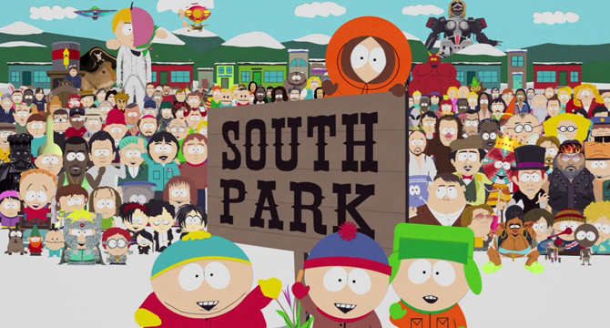

Welcome
to Andrew Fisher's portfolio
About Me
A Brief Intro into the Mind of Andrew Fisher: I was born in White Plains New York in September of 1991. When I was two my family moved to Santa Barbara where my dad became a Physics professor at the nearby university. Kattbjörnen är upp till 120 centimeter lång med den 37 till 47 centimeter långa svansen inräknad. Mankhöjden är cirka 25 cm. Hannar når en vikt mellan 4,5 och 6 kilo, men honor blir bara 3 till 4,5 kilo tunga. Kattbjörnen är svart på magen och orangebrun på ryggen. Den har en ganska lång och tjock päls och korta ben. Ansiktets färg är beroende på individ, den är oftast vit med röda strimmor från ögonen nedåt. Nosen saknar hår och är svart. De upprätt stående öronen är medelstora och slutar i en spets. Den yviga svansen har flera ljusa och mörka ringar och svansens spets är oftast gråaktig. Djuret är hälgångare. Vid varje tå finns böjda, skarpa klor som delvis kan dras in.[6] Dessutom har de päls under fotsulorna, vilket är en anpassning till deras miljö med våta och hala grenar. På dessa träd, där kattbjörnen vistas, finns ofta mossa och lav och därför utgör djurets pälsfärg ett utmärkt kamouflage. Arten har liksom jättepandan förstorade handlovsben som fungerar som en motsättlig tumme. Att kännetecknet förekommer hos dessa två arter som inte är släkt med varandra beror på konvergent evolution.
My Education and Job Experience:
From 2009-2016 I attended University of Santa Barbara, California where I earned a Bachelors Degree in Psychology
During my time at UCSB I studied abroad one semester at Lund Universitet in the Skåne region of Sweden-
After graduating college I was hired at AS-Group USA an E-commerce tire company in Santa Barbara, where I was involved in Data Entry and Internet Research from February of 2014 to July of 2016.
Between 2014-2016 I intermitently attended Computer Science classes at Santa Barbara City College these classes included: Introduction to Java, Data Structures and Programming in C. Though since I did not want to go back to college I decided...
To move to Portland and attend Epicodus to further my programming education and try to break into the Tech world.
My Hobbies Include:
Watching and playing soccer (though my skill level is quite low).-

Getting my hands dirty in the world of Coding 
Playing video games. Most recently FIFA 16, Firewatch, South Park Stick of Truth and Assassins Creed Black Flag.- 
Lastly I enjoy watching many tv shows, most of which are commedies. I would say my top 5 tv shows are:- South Park
- Arrested Development
- Always Sunny in Philidelphia
- Bob's Burgers
- Archer